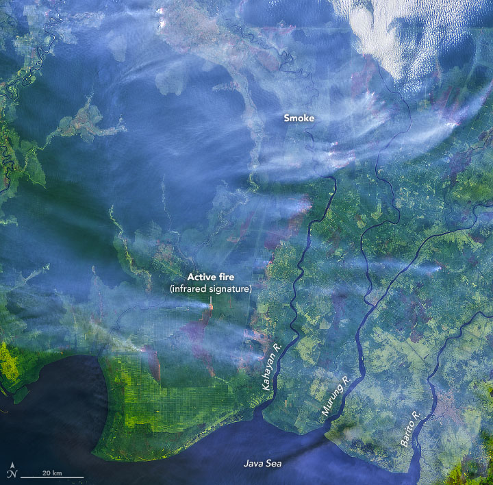

NASA Space Apps 2026 · Indonesia prototype
The satellite changed.
Should your conclusion?
Compare burning seasons across MODIS and VIIRS, inspect observation conditions, and choose what deserves closer investigation. Real NASA data, measured decision trade-offs, and evidence you can open.
Start the interactive evidence story ↗The project in 30 seconds
Download demo MP4 ↓Actual prototype screens and NASA data. Synthetic narration; captions included. Snapshot prepared 14 November 2026.
Read the demo transcript
Would changing the satellite change your conclusion? Compare twenty-three years of NASA observations for your chosen region. A documented Borneo event anchors the story, with separate Landsat evidence. Test the adjustment, and see where it fails. Daily masks distinguish clouds from non-fire classifications. Share the seasonal briefing with its sources and limitations.
The challenge and our response
One calendar across changing instruments
MODIS and VIIRS observe burning with different spatial resolution, sensitivity and schedules. Simply joining their counts can create a false change in the record. We preserve each instrument, count occupied cells on a common grid, fit regional and seasonal overlap ratios, then test on years excluded from fitting.
The working web app covers Indonesia from 2003–2025, with a separate dated 8–12 November 2026 comparison. Users select a study region or draw a rectangle, inspect seasonal context, change processing choices and download the analysis.
Interactive calendar, map, original observations and source-specific downloads.
A historical three-month peak with leave-one-year-out sensitivity, for planning discussions.
Identical calendar dates, concurrent sensors and explicit short-window limitations.
Seven methods, historical replay and a downloadable evidence passport.
A documented case · September 2019
Real burning, a qualified anomaly

Adjusted VIIRS: 1.93× the September baseline.
Aqua: 2.15×.
Both show above-typical activity. All six tested processing variants retain that conclusion. The “unusually high” classification changes with the confidence filter.
Landsat independently corroborates the event’s existence at a regional/monthly scale. It does not verify our aggregate count or anomaly magnitude.
Open the case and sensitivity tests ↗A second calendar · observation context
What could the satellite see?
We added NASA’s daily MYD14A1 fire masks for the same 14,386 native grid cells across sixteen historical dates. They retain cloud, missing and non-fire classifications that hotspot-only files cannot show.
On 17 September 2019, the fixed local sample contains 49.4% cloud-classified cells and three fire-classified cells. That does not tell us how many fires clouds concealed. Daily composites also do not supply clear-sky overpass counts, so we do not use these fractions as a correction factor.
Inspect both years and every class ↗Evidence judges can inspect
Every headline has a boundary
| Finding | Evidence | What it does not establish |
|---|---|---|
| More comparable national months | NOAA-20 held-out WAPE: 451.04% before adjustment, 13.45% after; NPP: 434.09% to 13.70%. | Complete fire detection, uniform local performance or current-window accuracy. |
| Above-typical recent category | 8–12 November 2026 Kalimantan: adjusted 2.70× and Aqua 1.84× the matched-date historical median. | A precise count. Original sensor disagreement is 46.8%; alternatives do not reduce it. |
| Observation timing changed | Detected daytime medians: Aqua about 13:33 in 2019 and 15:40 in 2026; NOAA-20 remains near 13:30. | The causal contribution of orbit drift to the count gap or a full orbit-wide coverage measure. |
| Real fire episode | Separate Landsat imagery corroborates southern Borneo burning in September 2019. | Ground-truth accuracy of each hotspot, total count or estimated burned area. |
What remains unresolved
Paired observation/overpass normalization, current NRT-to-standard continuity, reliable arbitrary-area uncertainty and broad independent validation. We have not conducted an external land-manager usability study. The prototype supports historical analysis; it does not issue operational fire warnings.
Why this approach matters
A result others can challenge
How does it address the whole challenge?
It combines MODIS history with VIIRS continuity, provides a burning calendar with area and year selection, identifies historical critical periods and unusual months, includes a date-matched recent comparison, and exports analytics, original hotspots and visuals. The main explorer covers Indonesia; two bounded external-region transfer viewers cover Punjab and southeast Australia. Global scalability remains future work.
What makes it distinctive?
The analyst can change sensors and processing assumptions, replay an excluded historical period, inspect observation classes and take the evidence with the result. The product makes methodological failure visible alongside success.
Why did you keep the 46.8% disagreement?
Six alternatives failed to improve it. Earlier-year selection avoids choosing a model just because it fits today's discrepancy. We publish the alternatives and show that shared categories can still conceal shared model failures.
What would the next research phase test?
Full quality data for both sensors and matched clear-sky swaths, further independent imagery to resolve the six inconclusive scene checks, prospective recent-period validation and task-based studies with fire analysts. The current time-restriction experiment failed its recent support gate; full Aqua mask/QA subsets are implemented.
New evidence, concrete decisions
When the data says “not established”
167 daily layers retain full native FireMask and QA. Seventeen missing archive dates stay unavailable. The 2020 outage changes what we can claim about annual timing.
Two predefined windows fail the current support gate. No recent Aqua detections survive the restrictions; unsupported estimates are withheld, and the 46.8% gap remains.
Earlier burning is not established. Above-typical September activity survives six variants. Three transparent locations invite retrospective imagery review, with explicit reasons to revise the conclusion.
External usefulness validation: not conducted, 0 participants. The tasks and comprehension checks are prepared; no endorsement or measured benefit is claimed.
Evidence across places and instruments
A better count is only part of the answer.
| Experiment | Measured result | What changed in our claim |
|---|---|---|
| Decision benchmark | 710 region-month comparisons. NOAA-20 agreement 79.6% → 82.9%; balanced accuracy 78.7% → 70.6%. | Higher overall agreement comes with more rare-category misses. No universal superiority. |
| Punjab transfer | Frozen transfer 60.4% category agreement; local adaptation 70.8%. | Regional adaptation can help, but its performance must be measured. |
| Southeast Australia transfer | Count WAPE improves 44.1% → 27.1%; category agreement worsens 72.9% → 66.7%. | A better count score is not automatically a better decision model. |
| Independent Landsat audit | Three candidates + three comparison cells; twelve dated scene subsets. Six inconclusive fire-attribution outcomes. | Passing pixel QA does not resolve haze, scene timing or ambiguous surface change. |
Methods and sampling rules were recorded before these follow-up runs. Earlier Indonesia results had already been seen. None of these tests resolves the 46.8% recent sensor discrepancy or constitutes external practitioner validation.
Submission materials
Open data. Reproducible work.
Public supporting materials, prepared for the Harmonization of MODIS and VIIRS Hot Spots challenge. Official submission through the Space Apps portal remains a separate step.